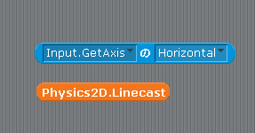

Scratch is developed by the Lifelong Kindergarten Group at the MIT Media Lab. See http://scratch.mit.edu
クラス
scratch2unity では図1の様に変数でクラスも表すことにしています。
図1: クラス

なお scratch2unity で用意しているクラスは表1に示す2つです。
具体的な各クラスの使い方についてもやはり演習中を進めながら説明します。
表1: scratch2unity のクラス
Input クラス : キーボード、マウス、ゲームパッドなどの入力をサポートするクラス
Physics2D クラス : 当たり判定をサポートするクラス